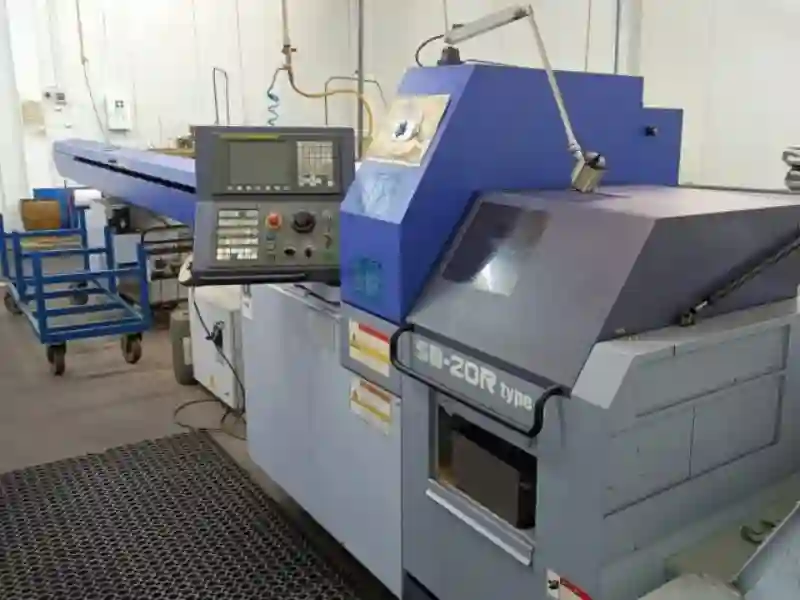
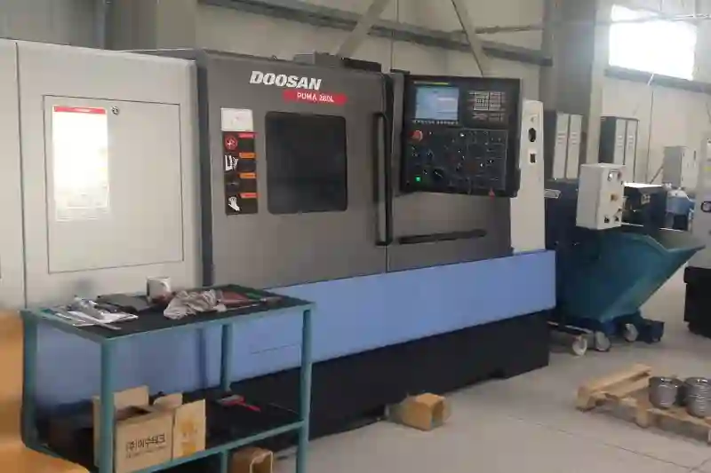
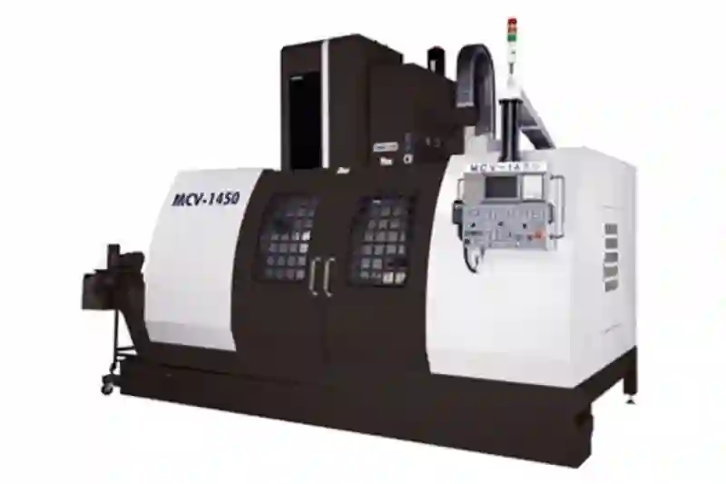
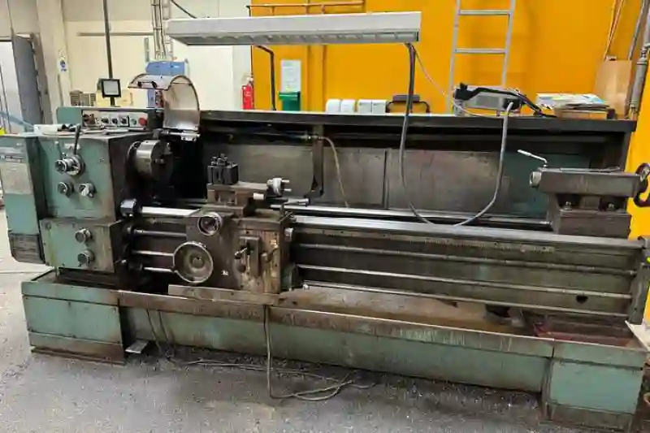

Aymaksan Makina Hakkımızda
Aymaksan Makine, hassas talaşlı imalat ve CNC üretim alanlarında uzun yıllara dayanan deneyimiyle sanayiye güvenilir çözümler sunar. Kuruluşundan itibaren kalite, süreklilik ve teknik mükemmeliyet ilkelerini merkezine alan firma, modern makine parkı ve uzman kadrosuyla karmaşık projeleri yönetebilir. Aymaksan makina (Aymaksan) ifadesiyle özdeşleşen bu yaklaşım, müşteri ihtiyaçlarını doğru analiz etmeyi ve sürdürülebilir üretim hedeflerini benimsemeyi sağlar. Otomotivden savunma sanayine uzanan geniş sektör yelpazesinde, ölçülebilir kalite standartları ve şeffaf iş süreçleriyle uzun vadeli iş ortaklıkları kurulmasına odaklanılır. Planlama, dokümantasyon ve kalite kontrol disiplinleri sayesinde her proje zamanında, izlenebilir ve teknik beklentilere uygun biçimde tamamlanır.
Aymaksan Makina (Aymaksan), temelleri 1988 yılında Doğan Aydemir tarafından atılan ve üretime duyulan tutkuyu kurumsal bir mühendislik disiplinine dönüştüren köklü bir sanayi kuruluşudur. İlk yıllarında edinilen saha tecrübesi, zaman içerisinde özel talaşlı imalat firması kimliğinin oluşmasını sağlamış; bugün ise çok sayıda sektöre hitap eden güçlü bir üretim altyapısı ortaya çıkmıştır.
Kurulduğu günden bu yana değişmeyen temel yaklaşımımız; kalite, süreklilik ve müşteri odaklı üretim anlayışıdır. 1996 yılı itibarıyla Aymaksan Makine (Aymaksan) adıyla faaliyetlerini sürdüren firmamız, geleneksel ustalık ile modern CNC teknolojilerini bir araya getirerek cnc parça üretimi ve endüstriyel makine imalatı alanlarında güvenilir çözümler sunmaktadır.
Hedefleriniz. Uzmanlığımız.
1988’den Günümüze Aymaksan Makina’nın Üretim Yolculuğu
Aydemir Makina adıyla başlayan Aymaksan’ın bu yolculuğu, üretimin yalnızca bir sonucu değil; planlama, mühendislik ve sürekli iyileştirme süreci olduğunun bilinciyle şekillenmiştir. İlk dönemlerde gofret ve bisküvi makineleri üreten işletmemiz, gıda sektöründe edindiği bu tecrübeyi ilerleyen yıllarda farklı sektörlere uyarlamıştır.
Bu süreçte kazanılan mekanik bilgi birikimi, makine parça imalatı ve özel makine üretimi alanlarında önemli bir rekabet avantajı sağlamıştır. Gelişen müşteri talepleri doğrultusunda standart üretimin ötesine geçilmiş; sektöre özel makine tasarımı ve fonksiyonel üretim çözümleri ön plana alınmıştır.
Vizyonumuz: Sizin Avantajınız
Vizyonumuz
Aymaksan’nın vizyonu; köklü üretim tecrübesini modern mühendislik anlayışıyla birleştirerek, özel talaşlı imalat ve makine üretimi alanında güvenilir, sürdürülebilir ve tercih edilen bir sanayi markası olmaktır. Kuruluşumuzdan bu yana edindiğimiz teknik bilgi birikimini sürekli geliştirerek, yalnızca bugünün değil geleceğin sanayi ihtiyaçlarına da yanıt verebilen çözümler üretmeyi hedefliyoruz.
Teknolojinin hızla değiştiği endüstriyel dünyada, üretim kalitesini standartlaştıran değil, her projeye özel olarak optimize eden bir yaklaşımı benimsiyoruz. Bu doğrultuda vizyonumuz; CNC üretim teknolojilerinde yenilikleri yakından takip eden, sektörel çeşitliliğe uyum sağlayabilen ve mühendislik gücüyle fark yaratan bir üretim yapısı oluşturmaktır.
Aymaksan olarak, yalnızca parça veya makine üreten bir firma olmanın ötesinde; müşterileriyle uzun vadeli iş birlikleri kuran, güven esaslı bir çözüm ortağı olmayı amaçlıyoruz. Ulusal pazarda güçlenirken, uluslararası üretim standartlarını referans alan bir yapı kurarak, Türk sanayisinin kalite algısına katkı sağlamayı vizyonumuzun temel unsurları arasında görüyoruz.
Misyonumuz
Aymaksan’nın misyonu; müşteri ihtiyaçlarını doğru analiz eden, mühendislik odaklı ve yüksek hassasiyetli üretim çözümleri sunarak, her projede sürdürülebilir kaliteyi garanti altına almaktır. Üretimin her aşamasında planlı, ölçülebilir ve kontrol edilebilir süreçler uygulayarak, güvenilir ve uzun ömürlü ürünler ortaya koymayı temel görevimiz olarak görüyoruz.
Misyonumuz doğrultusunda; özel talaşlı imalat, CNC parça üretimi ve makine imalatı süreçlerinde teknik doğruluk, zamanında teslim ve şeffaf iletişim ilkelerinden taviz vermeden çalışıyoruz. Standart üretim çözümlerinin yeterli olmadığı noktalarda, projeye özel yaklaşım geliştirerek müşterilerimizin operasyonel verimliliğini artırmayı hedefliyoruz.
Aymaksan, üretim süreçlerinde yalnızca sonucu değil, sürecin tamamını sahiplenen bir anlayışla hareket eder. Bu kapsamda çalışanlarımızın teknik gelişimini desteklemek, üretim altyapısını sürekli iyileştirmek ve kalite bilincini kurumsal kültürün ayrılmaz bir parçası haline getirmek misyonumuzun temel bileşenlerindendir. Amacımız; her işte güven veren, tekrar tercih edilen ve uzun vadeli değer üreten bir sanayi çözüm ortağı olmaktır.
Doğan Aydemir’in Kurduğu Üretim Kültürü
Firmanın kurucusu Doğan Aydemir’in benimsediği üretim anlayışı, yalnızca makine üretmeyi değil; ihtiyaçları doğru analiz etmeyi ve uzun ömürlü çözümler geliştirmeyi esas alır. Bu yaklaşım sayesinde hassas cnc imalat süreçlerinde yüksek kalite standardı yakalanmış, ankara talaşlı imalat pazarında güvenilir bir marka algısı oluşturulmuştur.
Bugün Aymaksan Makine, bu üretim kültürünü modern teknolojilerle birleştirerek hem yerel hem de ulusal ölçekte tercih edilen bir makine imalat firması konumuna ulaşmıştır. Üretim süreçlerinde kullanılan cnc talaşlı imalat altyapısı, karmaşık geometrilere sahip parçaların yüksek hassasiyetle üretilmesini mümkün kılmaktadır.

Projeni Başlat
Aymaksan Makina Üretim Altyapısı ve Mühendislik Gücü
Aymaksan Makine, sürekli gelişen sanayi ihtiyaçlarına yanıt verebilmek adına üretim altyapısını planlı ve sürdürülebilir bir anlayışla şekillendirmiştir. Firmamız bünyesinde yer alan modern tezgâhlar, yüksek hassasiyet gerektiren özel talaşlı imalat firması standartlarına uygun olarak yapılandırılmıştır. Üretim sürecinin her aşamasında ölçülebilir kalite kriterleri esas alınarak, tekrarlanabilir ve güvenilir sonuçlar elde edilmektedir.
Geleneksel üretim bilgisi ile ileri teknoloji CNC sistemlerini bir araya getiren bu yapı, cnc üretim çözümleri kapsamında hem seri hem de proje bazlı üretimlere olanak tanır. Özellikle düşük tolerans gerektiren parça imalatlarında, proses kontrolü ve ölçüm doğrulama adımları titizlikle uygulanır.

CNC Torna ve Freze Teknolojileri ile Hassas Üretim
Üretim parkurumuzda yer alan CNC torna ve CNC dik işleme merkezleri, cnc parça üretimi süreçlerinin temelini oluşturmaktadır. Bu tezgâhlar sayesinde karmaşık geometrilere sahip parçalar, yüksek yüzey kalitesi ve ölçüsel doğrulukla işlenebilmektedir. Hassas cnc imalat gerektiren uygulamalarda kullanılan takım ve bağlama sistemleri, üretim stabilitesini artıracak şekilde seçilmektedir.
Aymaksan Makina, ankara talaşlı imalat alanında sunduğu bu teknik yetkinlik sayesinde otomotivden savunma sanayine, medikalden enerji sektörüne kadar geniş bir üretim yelpazesinde çözüm ortağı olarak konumlanmıştır. CNC süreçleri yalnızca parça üretimiyle sınırlı kalmayıp, üretilebilirlik analizi ve proses optimizasyonu ile desteklenmektedir.
CNC torna ve freze teknolojileri, yüksek hassasiyet gerektiren üretim süreçlerinin temelini oluşturur. Aymaksan Makine, modern CNC tezgâhları ve deneyimli teknik kadrosu ile karmaşık geometrilere sahip parçaları yüksek ölçü doğruluğu ve yüzey kalitesiyle işleyebilmektedir. Üretim sürecinin her aşamasında uygulanan kontrollü ilerleme, toleransların korunmasını ve parça tekrar edilebilirliğinin sağlanmasını mümkün kılar. Bu yaklaşım, seri üretim kadar proje bazlı imalatlarda da güvenilir sonuçlar elde edilmesini destekler.
Üretimde kullanılan CNC torna ve freze sistemleri, farklı malzemelere ve değişken üretim ihtiyaçlarına uyum sağlayacak şekilde yapılandırılmıştır. Planlama, takım seçimi ve proses optimizasyonu birlikte ele alınarak üretim verimliliği artırılır. Bu sayede Aymaksan Makine, yalnızca parça imalatı değil; süreç yönetimi, kalite sürekliliği ve uzun ömürlü kullanım avantajı sunan bütüncül üretim çözümleri geliştirmektedir.
Özel Makine ve Parça İmalatında Esnek Üretim Yaklaşımı
Standart çözümlerin yetersiz kaldığı projelerde özel makina üretimi ve makine parça imalatı devreye girmektedir. Aymaksan Makina, müşteri ihtiyaçlarına özel olarak geliştirilen projelerde tasarım, imalat ve montaj süreçlerini bütüncül bir bakış açısıyla yönetir. Bu yaklaşım, sektöre özel makine tasarımı projelerinde maksimum verimlilik sağlar.
Üretim esnekliği sayesinde hem tekil hem de küçük-orta ölçekli seri üretimler başarıyla gerçekleştirilmektedir. Bu noktada kullanılan makine imalat firması disiplini; malzeme seçimi, tolerans yönetimi ve fonksiyonel testlerle desteklenir. Böylece uzun ömürlü ve sahada güvenle kullanılabilen sistemler ortaya çıkar.
Üretim Süreçlerinde Kalite Kontrol ve Ölçüm Disiplini
Üretim sürecinin ayrılmaz bir parçası olan kalite kontrol, Aymaksan’da sistematik olarak uygulanır. Parça imalatı sırasında ara ölçümler, final kontrol ve teknik dokümantasyon süreçleri eksiksiz yürütülür. Bu yaklaşım, endüstriyel makina imalatı projelerinde sürdürülebilir kalite standardının korunmasını sağlar.
Özellikle özel cnc parça üretimi gerektiren uygulamalarda, ölçü hassasiyeti ve yüzey kalitesi kritik öneme sahiptir. Bu nedenle üretim süreci boyunca ölçüm ekipmanları aktif olarak kullanılır ve sapmalar anında kontrol altına alınır.
Projeni Başlat
Farklı Sektörlere Özel Üretim Yetkinliği
Aymaksan Makine, sahip olduğu teknik altyapı ve mühendislik yaklaşımı sayesinde tek bir sektöre bağlı kalmadan, farklı endüstrilerin ihtiyaçlarına özel çözümler geliştirebilen bir özel talaşlı imalat firması olarak konumlanmıştır. Her sektörün kendine özgü tolerans, kalite ve güvenlik gereksinimleri bulunur. Bu nedenle üretim süreçlerimiz, sektörel standartlara göre yeniden yapılandırılabilir esnekliğe sahiptir.
Bu yaklaşım, cnc parça üretimi ve endüstriyel makine imalatı projelerinde yüksek uyum ve sürdürülebilir kalite sağlamaktadır. Proje başlangıcından seri üretime kadar tüm aşamalar, sektör dinamikleri dikkate alınarak planlanır.

Otomotiv ve Elektrikli Araç Sektörü için CNC Üretim
Otomotiv sektörü, yüksek hassasiyet ve süreklilik gerektiren üretim süreçleriyle öne çıkar. Aymaksan Makina, otomotiv ve elektrikli araç projelerinde kullanılan mekanik parçalar için hassas cnc imalat çözümleri sunar. Şasi bağlantı elemanları, aktarma organları ve özel mekanik bileşenler bu kapsamda üretilmektedir.
Bu alandaki üretimlerimizde ankara talaşlı imalat altyapısının sunduğu hız ve kalite avantajı ön plana çıkar. Ayrıca cnc talaşlı imalat süreçleri, seri üretime uygunluk ve proses stabilitesi açısından titizlikle yönetilir.
Savunma Sanayi için Yüksek Hassasiyetli İmalat
Savunma sanayi projeleri, tolerans sınırlarının son derece dar olduğu ve kalite kontrol süreçlerinin kritik önem taşıdığı alanlardır. Aymaksan Makine, savunma sanayine yönelik projelerde özel cnc parça üretimi ve makine parça imalatı konularında yüksek teknik yeterliliğe sahiptir.
Bu projelerde üretim süreci; izlenebilirlik, ölçü doğrulama ve teknik dokümantasyon ile desteklenir. Makine imalat firması disiplini doğrultusunda gerçekleştirilen bu çalışmalar, uzun ömürlü ve güvenilir çözümler sunmayı hedefler.
Medikal ve Biyomekanik Parça Üretimi
Medikal sektör, hem insan sağlığına doğrudan etki etmesi hem de hassasiyet gereksinimleri nedeniyle özel üretim süreçleri gerektirir. Aymaksan Makina, bu alanda kullanılan mekanik parçalar için cnc üretim çözümleri geliştirir. Düşük toleranslı ve yüzey kalitesi yüksek parçalar, kontrollü üretim adımlarıyla imal edilir.
Bu kapsamda gerçekleştirilen özel makine üretimi ve parça imalatı, medikal cihaz üreticilerinin teknik beklentilerine uygun olarak planlanır. Üretim süreçlerinde kalite sürekliliği öncelikli kriterdir.
Enerji, Yenilenebilir Sistemler ve Endüstriyel Uygulamalar
Enerji ve yenilenebilir sistemler sektörü, dayanıklılık ve uzun süreli performans gerektiren mekanik bileşenler içerir. Aymaksan Makina, bu alanda kullanılan bağlantı elemanları ve özel mekanik parçalar için endüstriyel makine imalatı çözümleri sunmaktadır.
Ayrıca genel makine ve endüstri sektörüne yönelik projelerde, sektöre özel makine tasarımı yaklaşımıyla geliştirilen sistemler, üretim verimliliğini artırmaya odaklanır. Bu sayede farklı sanayi kollarına uyarlanabilir çözümler ortaya çıkar.
Projeni Başlat
Aymaksan Makine’de Kalite Politikası
Aymaksan Makine, üretim süreçlerinde kaliteyi bir sonuç değil, sürdürülebilir bir sistem olarak ele alır. Bu yaklaşım, firmamızın özel talaşlı imalat firması kimliğinin temelini oluşturur. Üretimin her aşamasında teknik standartlara uyum, ölçülebilirlik ve izlenebilirlik esas alınır. Böylece ortaya çıkan her ürün, yalnızca teknik beklentileri değil, uzun vadeli kullanım gereksinimlerini de karşılar.
Kalite politikamız; cnc parça üretimi ve endüstriyel makine imalatı projelerinde tekrarlanabilir sonuçlar elde etmeyi hedefler. Üretim sürecine entegre edilen kontrol mekanizmaları, hata payını minimize ederek güvenilir çözümler sunmamızı sağlar.

Müşteri Odaklı Üretim ve Proje Yönetimi
Her projenin kendine özgü teknik gereksinimleri ve operasyonel hedefleri vardır. Aymaksan Makine, müşteri beklentilerini üretim sürecinin merkezine alarak cnc üretim çözümleri geliştirir. Proje başlangıcında yapılan teknik analizler, doğru malzeme seçimi ve uygun üretim yönteminin belirlenmesini sağlar.
Bu yaklaşım, özel cnc parça üretimi ve makine parça imalatı projelerinde yüksek uyum ve verimlilik sağlar. Proje süresince müşteriyle kurulan şeffaf iletişim, sürecin her aşamasında kontrol ve güven ortamı oluşturur.
Sürekli İyileştirme ve Üretimde Verimlilik
Sanayi sektöründe rekabetin sürdürülebilirliği, sürekli gelişim ve iyileştirme kültürüne bağlıdır. Aymaksan Makina, üretim süreçlerini düzenli olarak analiz eder ve verimlilik artırıcı adımlar atar. Bu yaklaşım, hassas cnc imalat gerektiren projelerde proses stabilitesini güçlendirir.
Üretim verimliliği; yalnızca hız değil, aynı zamanda kalite ve maliyet dengesi anlamına gelir. Bu nedenle ankara talaşlı imalat altyapımız, güncel teknolojiye uyumlu şekilde planlanmakta ve geliştirilmektedir.
Kurumsal Vizyon ve Gelecek Hedefleri
Aymaksan Makine, sahip olduğu bilgi birikimini ve üretim deneyimini geleceğe taşıma vizyonuyla hareket eder. Hedefimiz; makine imalat firması kimliğimizi daha da güçlendirerek, sektörel çeşitliliğimizi artırmak ve yenilikçi üretim çözümleri geliştirmektir.
Bu doğrultuda sektöre özel makine tasarımı ve özel makine üretimi alanlarında Ar-Ge odaklı projelere önem verilmektedir. Uzun vadede, ulusal ve uluslararası pazarlarda tercih edilen bir endüstriyel makine imalatı markası olma hedefi doğrultusunda ilerlenmektedir.
Kurumsal Değerler ve Üretim Etiği
Aymaksan Makina’nın kurumsal değerleri; dürüstlük, sürdürülebilirlik ve teknik sorumluluk üzerine kuruludur. Üretim süreçlerinde etik ilkelere bağlı kalınması, hem müşteri memnuniyetini hem de uzun vadeli iş birliklerini destekler.
Bu değerler doğrultusunda gerçekleştirilen cnc talaşlı imalat ve üretim faaliyetleri, yalnızca bugünün değil, geleceğin sanayi ihtiyaçlarını da karşılayacak şekilde planlanmaktadır.
Projeni Başlat
Neden Aymaksan Makina?
Aymaksan Makine, yalnızca üretim yapan bir işletme değil; müşterileri için uzun vadeli bir çözüm ortağı olmayı hedefleyen köklü bir makine imalat firmasıdır. 1988 yılında temelleri atılan bu üretim kültürü, bugün özel talaşlı imalat firması kimliğiyle kurumsallaşmış ve farklı sektörlere güvenilir çözümler sunan bir yapıya dönüşmüştür.
Firmamızın tercih edilmesinin temel nedenleri arasında; teknik yeterlilik, sürdürülebilir kalite anlayışı ve proje bazlı esnek üretim kabiliyeti yer alır. Aymaksan, her projeyi yalnızca teknik bir üretim süreci olarak değil, karşılıklı güvene dayalı bir iş birliği olarak ele alır.
Güvenilir Üretim, Uzun Ömürlü Çözümler
Üretimde güven, yalnızca teslim edilen parçanın ölçüsel doğruluğuyla sınırlı değildir. Aynı zamanda üretim sürecinin şeffaflığı, zamanında teslim ve teknik destek yaklaşımıyla bütünleşir. Aymaksan Makina, bu anlayışı sayesinde cnc parça üretimi ve endüstriyel makine imalatı alanlarında kalıcı iş ortaklıkları kurmaktadır.
Özellikle hassas cnc imalat gerektiren projelerde, üretim sürecinin her adımı planlı ve kontrollü şekilde ilerletilir. Bu yaklaşım, müşterilerimizin operasyonel sürekliliğini destekleyen uzun ömürlü çözümler sunmamızı sağlar.
Ankara Merkezli Üretim Gücü ile Ulusal Hizmet
Ankara’da konumlanan üretim tesisimiz, ankara talaşlı imalat alanında hızlı erişim ve teknik koordinasyon avantajı sunar. Ancak hizmet anlayışımız yalnızca yerel ölçekte değil; ulusal ölçekte üretim ve çözüm sunabilecek kapasitededir.
Bu kapsamda gerçekleştirilen cnc talaşlı imalat ve özel cnc parça üretimi projeleri, farklı şehirlerden gelen taleplere de aynı kalite standardıyla karşılık verecek şekilde planlanmaktadır. Coğrafi konumdan bağımsız olarak, mühendislik ve üretim disiplini temel belirleyici unsurdur.
Sürdürülebilir İş Birliği ve Teknik Destek Yaklaşımı
Aymaksan Makina, üretim sonrası süreci de işin bir parçası olarak görür. Teknik dokümantasyon, üretim tekrarı ve revizyon süreçlerinde sağlanan destek, uzun vadeli iş birliklerinin temelini oluşturur. Bu yaklaşım, makine parça imalatı ve özel makine üretimi projelerinde süreklilik sağlar.
Ayrıca sektöre özel makine tasarımı projelerinde elde edilen deneyim, farklı sektörlere uyarlanabilir çözümler geliştirmemize olanak tanır. Böylece müşterilerimiz için yalnızca bugünün değil, geleceğin üretim ihtiyaçları da karşılanmış olur.
Aymaksan Makine ile Çalışmanın Katma Değeri
Aymaksan ile çalışmak;
- Net teknik iletişim
- Planlı ve kontrollü üretim
- Sürdürülebilir kalite
- Uzun vadeli iş ortaklığı
anlamına gelir. Bu değerler, cnc üretim çözümleri ve endüstriyel makine imalatı alanlarında firmamızı farklılaştıran temel unsurlardır.
Aymaksan ile çalışmak, yalnızca bir üreticiyle değil; süreci başından sonuna kadar sahiplenen, teknik sorumluluk alan ve uzun vadeli iş ortaklığını esas kabul eden bir çözüm ortağıyla birlikte hareket etmek anlamına gelir. Firma, her projeye standart bir üretim kalıbı üzerinden değil, ihtiyaca özel mühendislik yaklaşımıyla yaklaşarak gerçek katma değer yaratır.
Üretim süreçlerinde sağlanan planlama disiplini, ölçülebilir kalite anlayışı ve şeffaf iletişim, iş birliğinin her aşamasında güven oluşturur. CNC talaşlı imalat ve makine parça üretimi alanındaki tecrübe, karmaşık projelerde dahi öngörülebilir ve tekrarlanabilir sonuçlar elde edilmesini sağlar. Bu yaklaşım, müşterilerin operasyonel sürekliliğini desteklerken zaman ve maliyet yönetiminde de önemli avantajlar sunar.
Aymaksan, yalnızca teslim edilen ürünle değil; üretim süreci boyunca sunduğu teknik destek, revizyon esnekliği ve dokümantasyon yaklaşımıyla fark yaratır. Üretim sonrası süreçleri de işin bir parçası olarak ele alan bu anlayış, müşteriler için uzun vadeli verimlilik ve sürdürülebilir kalite anlamına gelir. Sonuç olarak Aymaksan Makine ile kurulan her iş birliği, güven, süreklilik ve mühendislik temelli gerçek bir katma değer sunar.
Projeni Başlat
Aymaksan & Google Yorumları
“Hertürlü cnc işlerinizi yaptırabileceğiniz bir yer, işciliği baya güzel, çay içmeye de gidebileceğiniz nadir yerlerden birisi.
“İşimi kolaylıkla halledebiliyorum ve işin güzel yanı öğrenci dostu bir yer, güler yüzlü ekibi ile beraber. Gönül rahatlığı ile gidilir.
“Her türlü makine imalatı işlerimde güvenebileceğim nadir şirkettir. İstediğim her makineyi sorunsuz ve titizlikle yaptıkları için kendilerine teşekkür ediyorum.
Google Yorumlarda insanlar hakkımızda neler diyor inceleyin! 500+ den fazla firma işletmemizle çalışıyor. Müşterilerimiz hakkımızda iyi yorumlar yapıyor. Bunu dürüstlüğümüze ve müşteri memnuniyetine verdiğimiz önemle elde ediyoruz. Sizin de yorumunuzu bekliyoruz…